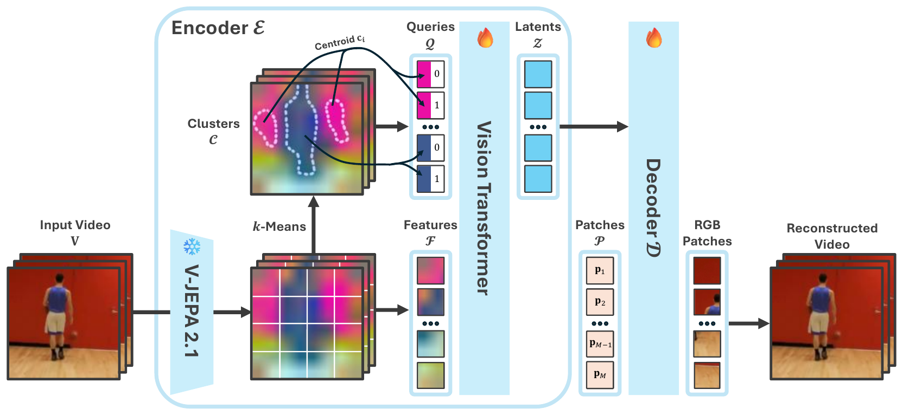

TrackTok encodes videos into object-aligned tokens. With the same 128-token budget, LARP's tokens stay locked to fixed image locations, while TrackTok's tokens follow the gymnast across the clip. This lets TrackTok match the generation quality of LARP and AdapTok with up to 8× fewer tokens.
We introduce TrackTok, an efficient video tokenization framework that produces object-centric tokens, i.e., tokens that consistently encode the same semantic object across time, even as it moves, deforms, or undergoes partial occlusion. Conventional patch-based or existing holistic tokenizers produce token identities often tied to fixed image locations. In contrast, our approach learns temporally persistent object-centric representations that bind visual features across frames into stable semantic units. This enables substantially more compact, continuous latent video representations, reducing the number of tokens required for downstream generative modeling with state-of-the-art flow models, while preserving the semantic structure needed for high-quality synthesis. Our tokenizer offers a favorable quality-efficiency trade-off. TrackTok achieves comparable class-conditional generative FVD on UCF-101 dataset at 8× fewer latent tokens and better latency, and outperforms existing 1D tokenization baselines on frame prediction task on Kinetics-600 across low token budgets. These results suggest that object-aligned and temporally persistent tokenization is a promising direction for scalable video generation, where reducing latent token counts is critical for efficient modeling.

TrackTok encodes a video into a fixed-size 1D set of continuous latent tokens, in three steps:
A ViT decoder maps the tokens back to RGB video. For generation, we train a LightningDiT-XL rectified-flow model directly on the TrackTok latents, conditioned on the class label (UCF-101) or on the tokens of the first 5 frames (Kinetics-600 frame prediction).
Token impact on UCF-101 validation clips (the examples of Fig. 9 in the paper), all with 128 tokens. We zero out one token at a time, decode, and assign each pixel to the token whose removal hurts that pixel most. Each pixel then shows its token's colour, taken from the top 3 principal components of the token features and blended over that model's reconstruction. AdapTok's and LARP's tokens are dominated by textures and edges. Without cluster queries (w/o CQ), TrackTok's tokens still cover fixed regions of the video. With cluster queries, TrackTok's tokens follow the discus thrower, the fencers and the table-tennis player through the clip.
Random clips from Figs. E4–E6 of the paper, all with 128 tokens. Click to enlarge.
A YouTube-VIS 2021 validation video, 28 tokens per clip for every method. We link tokens across clips into tracks and give each track one colour for the whole video; tracks that never leave a single clip are drawn in grey. A region that keeps its colour over time is therefore a token that is being tracked. TrackTok's tracks stay on the runners for the whole video, while the baselines' tracks break into fragments that do not follow object boundaries.
| Method | Object discovery (per frame) | Tracking (across frames) | ||||
|---|---|---|---|---|---|---|
| Purity↑ | FG-ARI↑ | mBO↑ | FG-ARI↑ | mBO↑ | J&F↑ | |
| AdapTok | 83.1 | 6.2 | 10.5 | 2.7 | 8.0 | 7.6 |
| LARP | 84.5 | 6.9 | 12.3 | 3.3 | 8.5 | 7.7 |
| TrackTok w/o CQ | 84.9 | 9.9 | 13.7 | 6.3 | 10.7 | 10.5 |
| TrackTok | 93.8 | 21.3 | 25.2 | 16.7 | 21.1 | 19.1 |
Object discovery and tracking on YouTube-VIS 2021, 28 tokens for every method.
TrackTok has the best gFVD at every budget up to 256 tokens and degrades gracefully as the budget shrinks: with 32 tokens it is 3.3× better than LARP, and it matches LARP's 256-token quality with 8× fewer tokens. LARP is retrained with our setup.
Given 5 context frames, the model predicts the next 11. In the low-token regime, TrackTok beats LARP and AdapTok at every budget. With 128 tokens it reaches 40.7 gFVD, close to OmniTokenizer's 32.9 with 4096 tokens.
(a) Reconstruction quality on UCF-101
(b) Generation quality vs. latency
(a) TrackTok's reconstruction FVD stays stable from 1024 down to 64 tokens, while LARP and AdapTok degrade by an order of magnitude. (b) Fewer tokens means faster generation: TrackTok with 128 tokens samples a video 8× faster than LARP with 1024 tokens, at comparable gFVD.
The samples of Fig. 5 in the paper: 16-frame, 128×128 videos from a LightningDiT-XL trained on TrackTok latents with 256, 128 and 32 tokens, next to LARP with 1024 tokens. Each row shares a class label; samples are drawn independently. Even with 32 tokens, objects keep their shape and move coherently.
The examples of Fig. 6 in the paper, all methods with 128 tokens. The left column plays the 5 input frames and then holds the last one. Each method column shows its full 16-frame output: its reconstruction of the 5 input frames, followed by the 11 frames it predicts.
Clips from Fig. E10 of the paper, 128 tokens. Click to enlarge.
@inproceedings{pham26tracktok,
title = {TrackTok: Semantically Persistent Tokens for Latent Video Generation},
author = {Pham, Nhi and Wewer, Christopher and Schiele, Bernt and Fischer, Jonas and Lenssen, Jan Eric},
booktitle = {Advances in Neural Information Processing Systems},
year = {2026}
}